Publicação alternativa
Um canal fora do catálogo, com escala humana, contexto e voz.
arquivo / método / cultura
Fanzine é publicação independente: uma ideia, uma cópia, uma mão. Um arquivo para quem quer publicar fora da engrenagem.

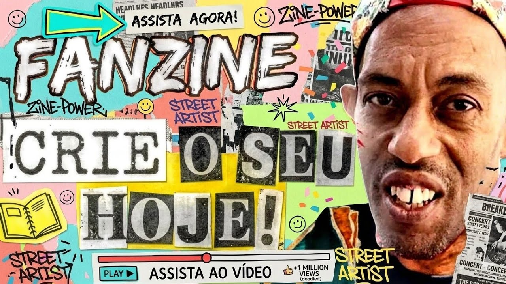
01 — a ideia
Não é sobre publicação perfeita. É sobre dar forma ao que só existia na cabeça — e deixar marcas fora do algoritmo.
02 — o que é um fanzine
O termo vem de fanzine, uma publicação feita por fãs, mas nasceu como um gesto maior: provar que uma ideia pode circular sem pedir licença à indústria.
As primeiras revistas de fãs mostram que a xerox já era uma forma de pertencer. A cultura independente cresce, troca cópias e se torna rede.
Hoje, o fanzine continua sendo feito com o que está ao alcance: papel, tesoura, cola, grampo, uma impressora ou uma oficina comunitária.
Ele dá contexto a subculturas, registra cenas, aproxima pessoas e cria arquivos que não dependem de uma plataforma.

Um canal fora do catálogo, com escala humana, contexto e voz.
Uma rede de cópias, encontros e afetos que se sustenta com recursos próprios.
Guarda memórias, abre repertórios e aproxima quem produz de quem lê.
03 — o mapa
Escolha o formato que conversa com a sua história. A forma pode mudar; a intenção de publicar, não.
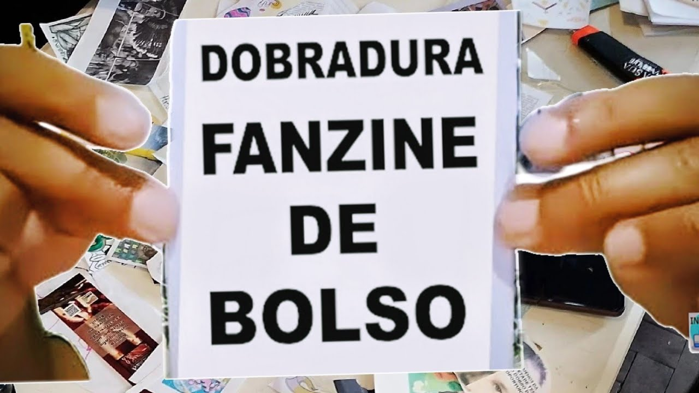
Miúdo, rápido de fazer e perfeito para carregar. Uma boa porta de entrada.
formato · 8 páginas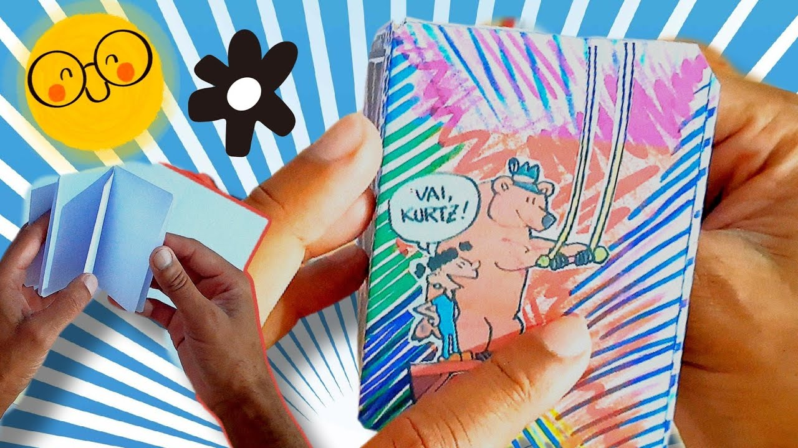
Imagem, sequência e experimentação visual encontram espaço para respirar.
forma · visual
Poemas, ensaios, crônicas e histórias que pedem tempo, foco e atenção.
palavra · pausa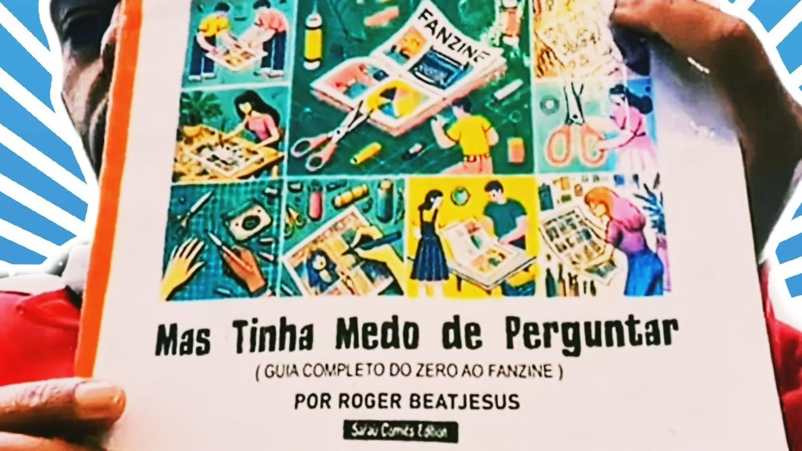
Um conteúdo ensinado com clareza para abrir conversas e compartilhar aprendizados.
ensino · troca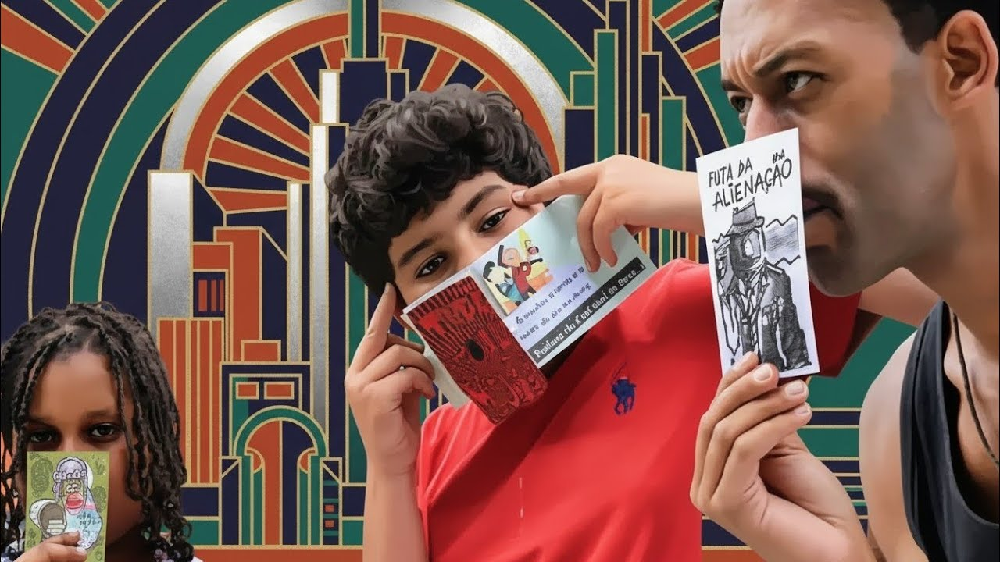
Feito com a turma, para a turma. Memória e circulação em um mesmo gesto.
coletivo · pertencimento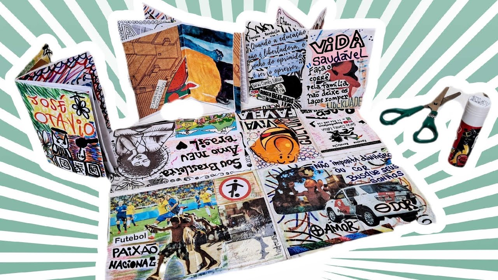
Dobras, não-linearidade e regras novas para testar os limites do livro.
brincadeira · regra nova04 — método aberto
Seis movimentos simples para sair do “um dia eu faço” e chegar ao primeiro exemplar na mão.
Anote temas, imagens, conversas e sensações. A ideia não precisa ser uma resposta; precisa ter vontade de existir.
Faça mapas de página, monte uma sequência e experimente formatos. O rascunho é uma conversa, não um julgamento.
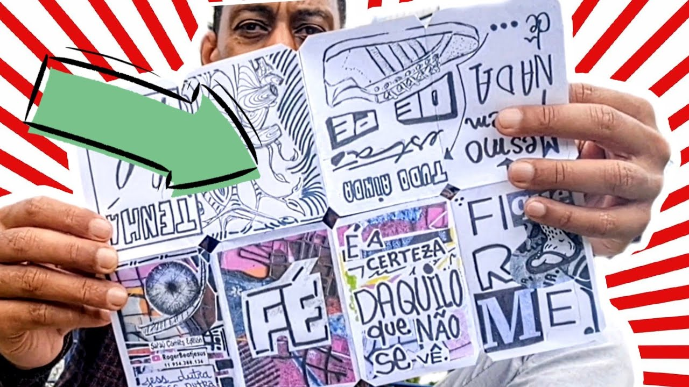
Escreva curto, recorte, cole, encolha e observe o que emerge quando as duas linguagens se encontram.
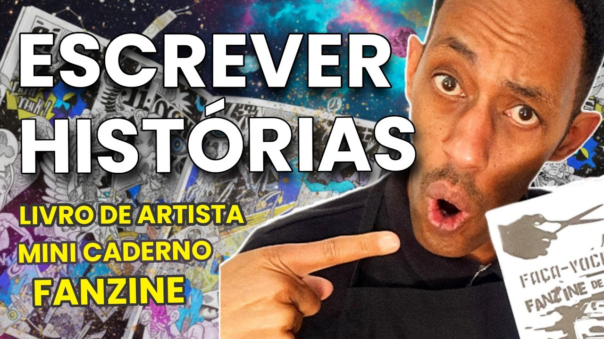
Respire, alinhamentos, contraste e uma tipografia que não roube a cena. A forma também conta a história.
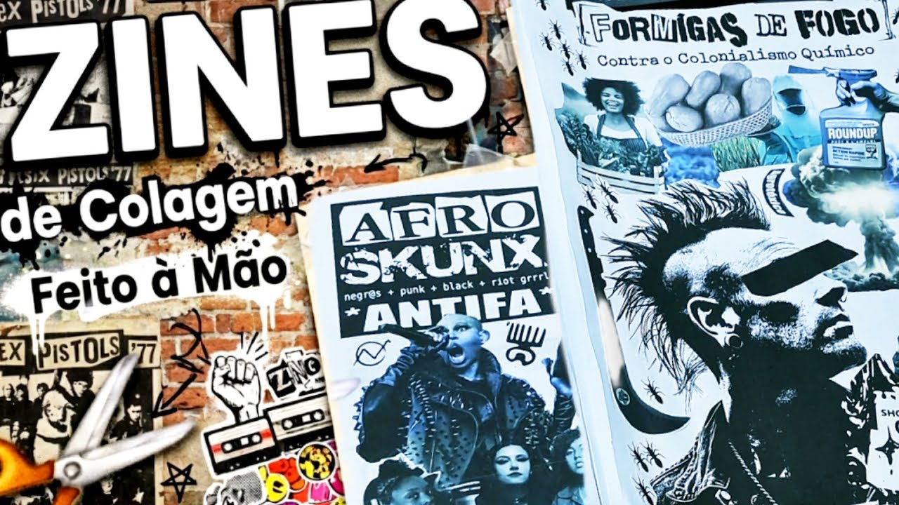
Xerox, impressora doméstica ou gráfica. Faça duas versões, compare e escolha a imperfeição que melhor combina.
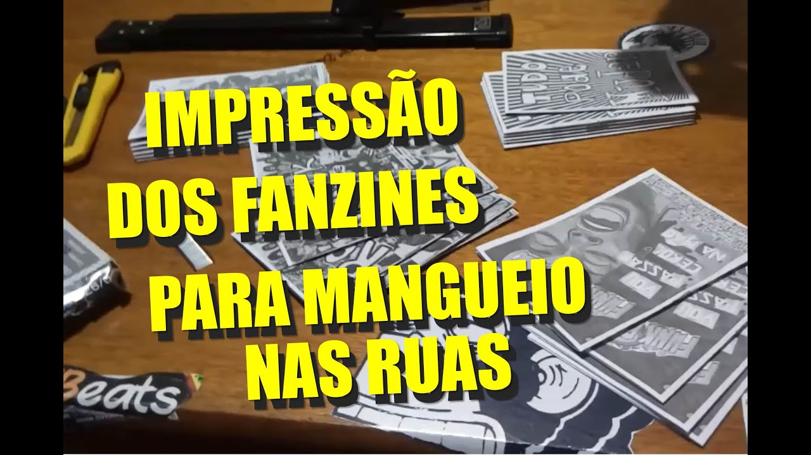
Feira, troca, biblioteca de bairro, saraus ou correspondência. A circulação fecha o ciclo e abre o próximo.

05 — acabamento
A montagem também é autoria. Uma lombada, um grampo ou uma costura pode transformar páginas soltas em um objeto que passa de mão em mão.
Marque o mapa na folha e crie um percurso de leitura contínuo, do pocket à sanfona.
A montagem mais rápida: dobra, alinha e prende no centro ou na lombada.
Agulha, linha e pequenos furos para uma lombada que mostra o trabalho.
Papel reciclado, capa feita à mão e acabamento que deixa a edição única.
Xerox ou impressora comum: pequenas tiragens viáveis em casa.
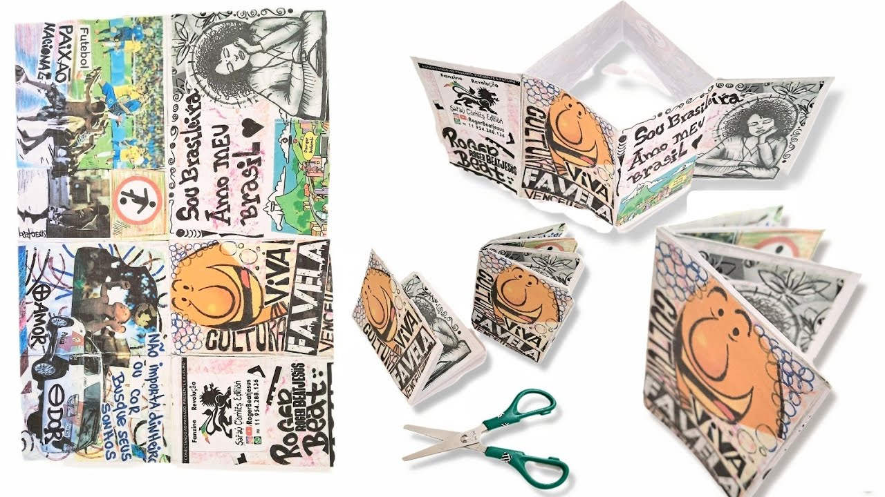
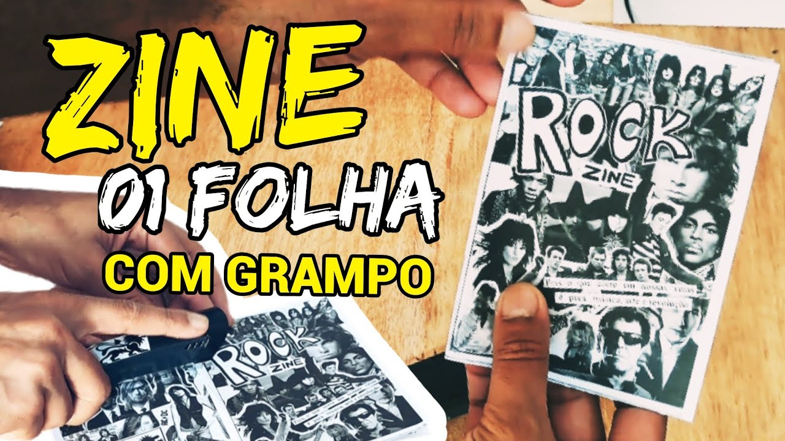
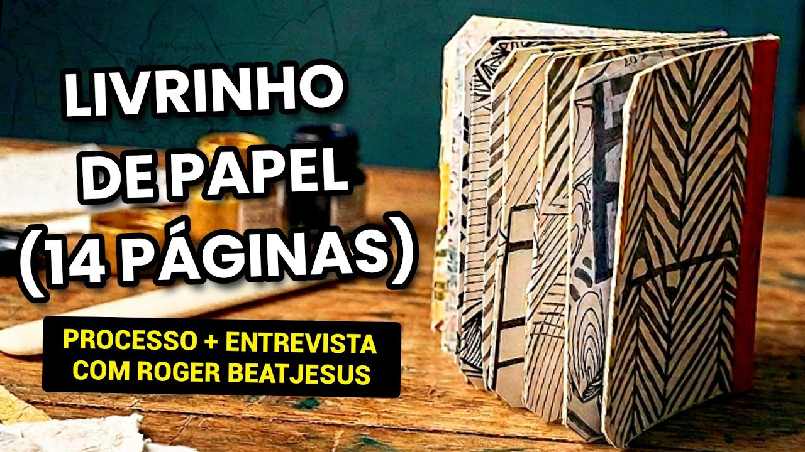
06 — movimento
O fanzine é um objeto cultural: atravessa a arte urbana, a cultura periférica, a escola e os projetos que fazem rede.
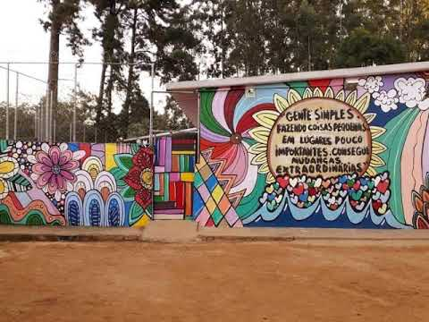
Impressão, colagem e grafite compartilham a mesma lógica de ocupar a cidade.
Rostos, histórias e linguagens que costumam ser silenciadas nos arquivos oficiais.
Tiragens curtas, autoria coletiva e circulação fora da lógica de consumo.
A escola vira atelier: ler, fazer, publicar e discutir o próprio contexto.
Feiras, oficinas e saraus que transformam publicação em encontro.
07 — referências
Uma seleção de capas, encontros, oficinas e publicações. Filtre por linguagem e abra cada imagem para ver a história por trás do papel.
08 — convite
Não espere a edição perfeita. Escolha uma data, junte um punhado de folhas e faça a primeira cópia existir.
Falar com o coletivo ↗